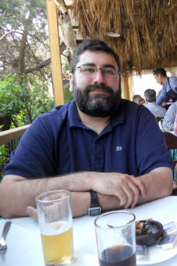

Current Lab Members
Daniel Gyllborg
PhD Student
daniel.gyllborg@ki.se
BSc 2008 University of Wisconsin-Madison
MSc 2011 Stockholm University
Interested in studying and characterizing the function and mechanisms by which components of the Wnt/PCP signalling pathway regulate the development of midbrain DA neurons in vivo and application of Wnts to improve protocols for the DA differentiation of stem cells. Also interested in single-cell heterogeneity in the developing midbrain.
ResearchGate; ORCiD; PubMed; LinkedIn
Kaneyasu Nishimura
Senior Researcher
kaneyasu.nishimura@ki.se
PhD 2008 Kyoto Pharmaceutical University
Interested in subtype specification of midbrain dopaminergic neurons
ResearchGate; ORCiD

Enrique Toledo
Postdoctoral Researcher
enrique.toledo@ki.se
My research work it is focus on the characterization of the mechanisms involved in midbrain dopaminergic differentiation. Flowing between the wet lab to generate data and test hypothesis, and the dry lab doing the computational part.
ORCiD; ResearchGate; Google Scholar
Postdoctoral researcher positions
Please, send your inquiries by e-mail to ernest.arenas@ki.se and include the following information:
- CV with publications and research experience
- A brief outline of research interests
Alumni
J. Carlos Villaescusa
Assistant Professor
Has started his own group at the Psychiatric Stem Cell Group
Pia Rivetti di Val Cervo
Postdoctoral researcher
Now working in lab of Elena Cattaneo
Shanzheng Yang
PhD Student -2016
Dissertation entitled "Mechanisms controlling midbrain dopaminergic neuron development"
Chika Yokota
Senior Researcher
LinkedInGeeta Ravindran
Karol Kaiser
Isabel Martin-Caballero
Spyridon Theofilopoulos
Mark Denham
Fabia Febbraro
Lukáš Čajánek
Diogo Ribeiro
Emma R Andersson
Paola Sacchetti
Gonçalo Castelo-Branco
Kyle M. Sousa
Nina Rawal
Linda Edman
Sonia Bonilla
Clare L. Parish
Vítězslav Bryja